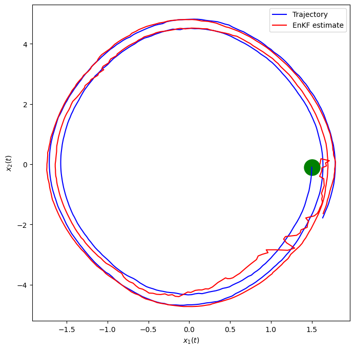

import matplotlib.pyplot as plt
import numpy as np
from scipy import linalg
np.random.seed(6)
# initialize and set up all matrices
q = 0.1 #0.01 # process noise
r = 0.1 #0.02 #0.1 # measurement noise
# need to add the ensemble dimension
Ne = 10 # number of ensemble members
Nx = 2 # state dimension
Ny = 1 # observation dimension
Nt = 500 # time dimension
dt = 0.01 # time step
g = 9.81 # gravitational acceleration
x_0 = np.array([1.5, 0.]) # Initial state
m_0 = np.array([1.6, 0.]) # Initial state estimate (slightly off)
#P_0 = np.array([[0.1, 0.],
# [0., 0.1]]) # Initial estimate covariance
P_0 = np.array([[r, 0.],
[0., r]]) # Initial estimate covariance
sig_w = q # process noise
sig_v = r # measurement noise
Q = sig_w**2 * np.array([[dt ** 3 / 3, dt ** 2 / 2],
[dt ** 2 / 2, dt]])
R = sig_v**2 * np.eye(Ny)
# Observation operator (nonlinear)
def Hx(x):
return np.array([np.sin(x[0])])
# State dynamics (nonlinear)
def Ax(x, dt):
m = np.array([x[0] + dt*x[1],
x[1] - g*dt* np.sin(x[0])])
return m12 Example 1: noisy pendulum
Consider the nonlinear ODE model for the oscillations of a noisy pendulum with unit mass and length \(L,\)
\[ \frac{\mathrm{d}^{2}\theta}{\mathrm{d} t^{2}}+\frac{g}{L}\sin\theta+w(t)=0 \]
where \(\theta\) is the angular displacement of the pendulum, \(g\) is the gravitational constant, \(L\) is the pendulum’s length, and \(w(t)\) is a white noise process. This is rewritten in state space form,
\[ \dot{\mathbf{x}}+\mathcal{M}(\mathbf{x})+\mathbf{w}=0, \]
where
\[ \mathbf{x}=\left[\begin{array}{c} x_{1}\\ x_{2} \end{array}\right]=\left[\begin{array}{c} \theta\\ \dot{\theta} \end{array}\right],\quad \mathcal{M}(\mathbf{x})=\left[\begin{array}{c} x_{2}\\ -\dfrac{g}{L}\sin x_{1} \end{array}\right],\quad \mathbf{w}=\left[\begin{array}{c} 0\\ w(t) \end{array}\right]. \]
Suppose that we have discrete, noisy measurements of the horizontal component of the position, \(\sin (\theta).\) Then the measurement equation is scalar,
\[ y_k = \sin \theta_k + v_k, \]
where \(v_k\) is a zero-mean Gaussian random variable with variance \(R.\) The system is thus nonlinear in state and measurement and the state-space system is of the general form seen above. A simple discretization, based on Euler’s method produces
\[ \begin{align*} \mathbf{x}_{k} & =\mathcal{M}(\mathbf{x}_{k-1})+\mathbf{w}_{k-1}\\ {y}_{k} & = \mathcal{H}_{k}(\mathbf{x}_{k}) + {v}_{k}, \end{align*} \]
where
\[ \mathbf{x}_{k}=\left[\begin{array}{c} x_{1}\\ x_{2} \end{array}\right]_{k}, \quad \mathcal{M}(\mathbf{x}_{k-1})=\left[\begin{array}{c} x_1 + \Delta t x_{2}\\ x_2 - \Delta t \dfrac{g}{L}\sin x_{1} \end{array}\right]_{k-1}, \quad \mathcal{H}(\mathbf{x}_{k}) = [\sin x_{1}]_k . \]
The noise terms have distributions
\[ \mathbf{w}_{k-1}\sim\mathcal{N}(\mathbf{0},Q),\quad v_{k}\sim\mathcal{N}(0,R), \]
where the process covariance matrix is
\[ Q=\left[\begin{array}{cc} q_{11} & q_{12}\\ q_{21} & q_{22} \end{array}\right], \]
with components (see KF example for 2D motion tracking),
\[ q_{11}=q_{c}\frac{\Delta t^{3}}{3},\quad q_{12}=q_{21}=q_{c}\frac{\Delta t^{2}}{2},\quad q_{22}=q_{c}\Delta t, \]
and \(q_c\) is the continuous process noise spectral density.
:::{admonition} Simulations :class: tip
In the simulations, we take: (see also Extended Kalman Filter example)
- 500 time steps with \(\Delta t = 0.01.\)
- Noise levels \(q_c=0.01\) and \(R=0.1.\)
- Initial angle \(x_1 = 1.8\) and initial angular velocity \(x_2 = 0.\)
- Initial diagonal state covariance of \(0.1.\) :::
12.1 Generate noisy observations
To generate the noisy observations, we have 2 options
- Use an accurate RK4 method.
- Use a simpler, first-order Euler method.
Whatever the approach chosen, it must be used both for the observation generation and for the state evolution within the Kalman filter.
We will use the simpler Euler approximation. For reference, here is the RK4 method.
def Pendulum(state, *args): #nonlinear pendulum
g = args[0]
L = args[1]
x1, x2 = state #Unpack the state vector
f = np.zeros(2) #Derivatives
f[0] = x2
f[1] = -g/L * np.sin(x1)
return f
def RK4(rhs, state, dt, *args):
k1 = rhs(state, *args)
k2 = rhs(state+k1*dt/2, *args)
k3 = rhs(state+k2*dt/2, *args)
k4 = rhs(state+k3*dt, *args)
new_state = state + (dt/6)*(k1 + 2*k2 + 2*k3 + k4)
return new_state
#np.random.seed(55)
# Solve system and generate noisy observations
T = np.linspace(0, Nt, Nt)
#x0True = np.array([1.8, 0.0]) # True initial conditions
x0True = np.array([1.5, 0.0]) # True initial conditions
#time integration
chol_Q = np.linalg.cholesky(Q) # noise std dev.
sqrt_R = np.sqrt(R)
xxTrue = np.zeros([Nx, Nt])
xxTrue[:,0] = x0True
yy = np.zeros((Nt, Ny))
yy[0] = np.sin(xxTrue[0, 0]) + sig_v * np.random.randn() # must initialize correctly!
for k in range(Nt-1):
w_k = chol_Q @ np.random.randn(2)
xxTrue[:,k+1] = RK4(Pendulum, xxTrue[:,k], dt, g, 1.0) + w_k
yy[k+1,0] = np.sin(xxTrue[0, k+1]) + sig_v * np.random.randn()
# plot results
fig, ax = plt.subplots(nrows=1,ncols=1, figsize=(10,4))
ax.plot(T*dt, np.sin(xxTrue[0, :]), color='b', linewidth = 3, label="Noisy state")
ax.scatter(T*dt, yy[:,0], marker="o", label="Measurements", color="red", alpha=0.66, s=10)
ax.set_xlabel('t')
ax.set_ylabel("$\sin(x_1(t))$", labelpad=5)
ax.legend()
plt.show()# Use Euler method
from common_utilities import generate_pendulum, RandomState, rmse, plot_pendulum
random_state = RandomState(1)
steps = Nt
x_0 = x0True
#timeline, states, observations = generate_pendulum(x_0, g, Q, dt, R, steps, random_state)
#plot_pendulum(timeline, observations, states, "Trajectory")
y = np.zeros((Nt, Ny))
timeline, xTrue, y[:, 0] = generate_pendulum(x_0, g, Q, dt, R, steps, random_state)
plot_pendulum(timeline, y, xTrue, "Trajectory")fig, ax = plt.subplots(nrows=1,ncols=1, figsize=(10,4))
ax.plot(T*dt, np.sin(xTrue[:, 0]), color='b', linewidth = 3, label="Noisy state")
ax.scatter(T*dt, y[:,0], marker="o", label="Measurements", color="red", alpha=0.66, s=10)
ax.legend()
plt.ylabel('$\sin x_1(t)$')
plt.xlabel('$t$')
plt.show()
fig, ax = plt.subplots(nrows=1,ncols=1, figsize=(6,6))
#plt.plot(xTrue[0, :], xTrue[1, :], 'b')
plt.plot(xTrue[:, 0], xTrue[:, 1], 'b')
plt.scatter(xTrue[0, 0], xTrue[0, 1], marker="o", color="green", s=500)
plt.xlabel('$x_1(t)$')
plt.ylabel('$x_2(t)$')
plt.show()
12.2 Ensemble Kalman Filter
def ens_kalman_filter(m_0, P_0, Q, R, Ne, dt, Y):
Nx = m_0.shape[-1]
Nt, Ny = Y.shape
enkf_m = np.empty((Nt, Nx))
enkf_P = np.empty((Nt, Nx, Nx))
X = np.empty((Nx, Ne))
HXf = np.empty((Ny, Nx))
X[:,:] = np.tile(m_0, (Ne,1)).T + np.linalg.cholesky(P_0)@np.random.randn(Nx, Ne) # initial ensemble state
P = P_0 # initial state covariance
enkf_m[0, :] = m_0
enkf_P[0, :, :] = P_0
for i in range(Nt-1):
# ==== predict/forecast ====
Xf = Ax(X[:,:],dt) + np.linalg.cholesky(Q)@np.random.randn(Nx, Ne) # predict state ensemble
mX = np.mean(Xf, axis=1) # state ensemble mean
Xfp = Xf - mX[:, None] # state forecast anomaly
#Phat = Xfp @ Xfp.T / (Ne - 1) # predict covariance (not needed)
# ==== prepare =====
HXf = Hx(Xf) # nonlinear observation
mY = np.mean(HXf, axis=1) # observation ensemble mean
HXp = HXf - mY[:, None] # observation anomaly
S = (HXp @ HXp.T)/(Ne - 1) + R # observation covariance
K = linalg.solve(S, HXp @ Xfp.T, assume_a="pos").T / (Ne - 1) # Kalman gain
# === perturb y and compute innovation ====
ypert = Y[i,:] + np.linalg.cholesky(R)@np.random.randn(Ny, Ne)
d = ypert - HXf
# ==== correct/analyze ====
X[:,:] = Xf + K @ d # update state ensemble
mX = np.mean(X[:,:], axis=1)# state analysis ensemble mean
Xap = X[:,:] - mX[:, None] # state analysis anomaly
P = Xap @ Xap.T / ( Ne - 1) # update covariance
# ==== save ====
enkf_m[i+1] = mX # save KF state estimate (mean)
enkf_P[i+1] = P # save KF error estimate (covariance)
return enkf_m, enkf_P# initialize state and covariance
x_0 = np.array([1.5, 0.]) # Initial state
m_0 = np.array([1.6, 0.]) # Initial state estimate (slightly off)
P_0 = np.array([[r, 0.],
[0., r]]) # Initial estimate covariance
enkf_m, enkf_P = ens_kalman_filter(m_0, P_0, Q, R, Ne, dt, y)
#rmse_ekf = rmse(ekf_m[:, :1], states[:, :1])
#print(f"EKF RMSE: {rmse_ekf}")fig, axes = plt.subplots(ncols=2, figsize=(18, 8))
x1 = xTrue # states
x2 = enkf_m # KF estimate
y = y # Measurements
timeline = T*dt
axes[1].scatter(timeline, y, marker=".", label="Measurements", color="red", alpha=0.66)
#axes[1].plot(timeline, np.sin(x1[0, :]), linestyle="dashdot", label="Trajectory", color="blue")
axes[1].plot(timeline, np.sin(x1[:, 0]), linestyle="dashdot", label="Trajectory", color="blue")
axes[1].plot(timeline, np.sin(x2[:, 0]), linestyle="dashdot", label="EnKF estimate", color="green")
#axes[0].plot(x1[0, :], x1[1, :], label="Trajectory", color="blue")
axes[0].plot(x1[:, 0], x1[:, 1], label="Trajectory", color="blue")
axes[0].plot(x2[:, 0], x2[:, 1], label="EnKF estimate", color="green")
axes[0].legend()
axes[1].legend()
axes[0].set_xlabel('$x_1(t)$')
axes[1].set_xlabel('$t$')
axes[0].set_ylabel('$ x_2(t)$')
axes[1].set_ylabel('$\sin x_1(t)$')
plt.show()
fig, ax = plt.subplots(nrows=1,ncols=1, figsize=(8,8))
plt.scatter(x1[0, 0], x1[0, 1], marker="o", color="green", s=500)
plt.plot(x1[:, 0], x1[:, 1], label="Trajectory", color="blue")
plt.plot(x2[:, 0], x2[:, 1], label="EnKF estimate", color="red")
plt.xlabel('$x_1(t)$')
plt.ylabel('$x_2(t)$')
plt.legend()
plt.show()
:::{admonition} Observations :class: warning
The ensemble Kalman filter tracks rapidly, smoothly and accurately the noisy trajectory of the pendulum. This can be compared to the performance of the EKF (extended Kalman filter) in Example 2, Section 4, that was less accurate (took longer to catch up) and was more noisy.
Note that the error/anomaly covariance elements, \(P_{ii},\) are noisy, since they are empirically averaged quantities.
:::